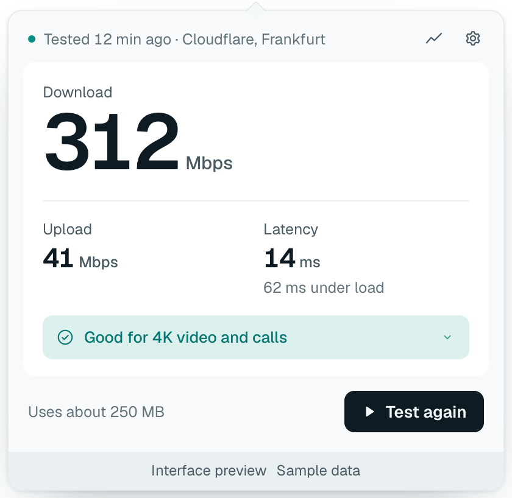

Internet speed, in your menu bar
Test download, upload and latency in one click from the macOS menu bar or the Windows system tray, and see what the numbers mean for video, calls and games.

What it does
-
One-click test
Download, upload, latency at rest and under load, and jitter. A test takes 12 to 20 seconds.
-
Plain meaning
Each result says what it is good for, such as “Good for 4K video and calls”, and what may stutter.
-
Data use shown
The estimate is shown before every test. On a hotspot or metered connection, Weir asks first.
-
Local history
Every test is kept for a year on your computer. Export it as CSV.
How it works
Weir tests against Cloudflare's speed test servers, the same ones speed.cloudflare.com uses, at the nearest data centre. Each result shows the server and when it ran.
Steady numbers, not peaks. Weir uses several connections, skips the ramp-up, and reports the speed the link holds. If a test stalls or is cut short, Weir says so and shows no number.
Weir measures your connection. It does not change or speed it up.
Privacy
No accounts, telemetry, analytics, or ads. Weir connects only to:
speed.cloudflare.comwhen you run a testgithub.comupdate checks, daily unless turned off
History stays on your computer and never includes your IP address, location, or Wi-Fi name. Details in PRIVACY.md.
Install
Builds don't carry an Apple or Microsoft publisher signature yet, so the system warns on first launch.
macOS 12+. Open the universal .dmg and move Weir to Applications. If macOS blocks it, go to System Settings → Privacy & Security → Open Anyway.
Windows x64. Run the -setup.exe. If SmartScreen warns, choose More info → Run anyway.